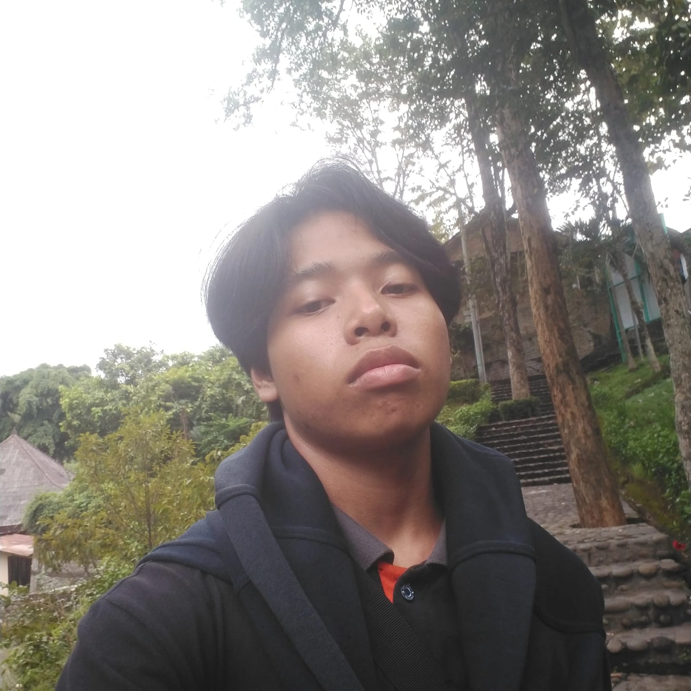

Sejarah Perusahaan
2022
Yukihira Dining didirikan dengan misi mempermudah akses makanan favorit bagi semua orang di kota besar Indonesia.
2023
Aplikasi mobile dan website resmi diluncurkan, serta menjalin kerjasama dengan 30+ restoran partner.
2024
Mencapai 1.000+ pengguna aktif bulanan, ekspansi layanan hingga 5 kota besar.
Tim Kami
Yukihira Joichiro
Founder
Berpengalaman 10 tahun di bidang FnB serta Chef Utama dalam Yukihira Dining. Visioner dan Founder Yukihira Dining.
Yukihira Souma
CEO
CEO Yukihira Dining sekaligus Chef pembantu Yukihira Joichiro dalam menjalankan bisnis Yukihira Dining.

Yohanes Bramanta
Developer
Fullstack Developer. Berpengalaman dalam bisnis FnB selama 3 tahun, sekarang sebagai Head Developer di Yukihira Dining.
Statistik Kami
0
Pengguna Aktif
0
Restoran Partner
0
Pengiriman Sukses
Nilai-Nilai Perusahaan
🍽️
Kualitas Makanan
Kami hanya bermitra dengan restoran yang menjaga kualitas rasa, kebersihan, dan pelayanan.
⚡
Kecepatan Layanan
Pengiriman makanan cepat dan tepat waktu adalah prioritas utama kami.
🤝
Kepuasan Pelanggan
Kami selalu siap mendengar dan meningkatkan pengalaman pelanggan kami.